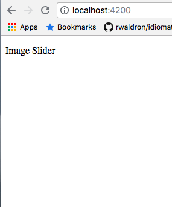

Angular Elements are Angular Components packaged as custom elements. They are currently supported by Chrome, Opera and Safari and are available in other browsers through polyfills. These elements can make use of the whole Angular Infrastructure with common Angular Interface and Change Detection Strategy. Once registered, these elements can be used within the browser.
This codelab will walk you through creating your own image-slider angular component, and then will help you to transform it into an angular element so that it can work outside the Angular Framework.
What you will build
|
In this codelab, you're going to build a image-slider element using angular 6. Your element wi:
|

What you'll learn
- How to make an image-slider custom component
- How to transform the image-slider custom component to custom element
- How to package the component so that it works inside the browser
What you'll need
- A recent version of angular-cli.
- The sample code
- A text editor
- Basic knowledge of Angular Components
This codelab is focused on Angular Elements. Non-relevant concepts and code blocks are glossed over and are provided for you to simply copy and paste.
Download the Code
Click the following link to download all the code for this codelab:
Unpack the downloaded zip file. This will unpack a root folder (angular-element-codelab-master), which contains
two folders ( image-slider ) and ( image-slider-finished ). We'll be doing all our coding work in a directory called image-slider.
Running the project
To run the project, you need to run the command ( ng-serve ) from the root directory ( image-slider ).
Once the app is bootstrapped, you will be able to see this:

How to create an image slider?
For this image slider, bind buttons using angular click binding. We will create an array of objects containing images, alt tags, links etc. We will place these images one below each other in a container and translate the container on click.
We are going to create an image-slider component and then will transform that into angular-element.
- Container for images and titles.
- An array containing the data
- Template to bind the data
There are multiple ways to get started with any project, in this case, to keep our project as simple as possible and concentrate on Angular Elements, we've provided you with basic code along with the css.
Creating an array and data service
Remember, the sliderArray will contain:
- An img key for the image URL in the slider
- An alt tag to provide alt for the image
- A text to provide the description about the image
The data.json file that is already in your src/assets directory should look something like this.
sliderArray = [
{img: 'http://bloquo.cc/img/works/1.jpg', alt: '', text: '365 Days Of weddings a year'},
{img: 'http://bloquo.cc/img/works/2.jpg', alt: '', text: '365 Days Of weddings a year'},
{img: 'http://bloquo.cc/img/works/3.jpg', alt: '', text: '365 Days Of weddings a year'},
{img: 'http://bloquo.cc/img/works/4.jpg', alt: '', text: '365 Days Of weddings a year'},
{img: 'http://bloquo.cc/img/works/5.jpg', alt: '', text: '365 Days Of weddings a year'}
];
We need to fetch this data in our component using a service. In the file data.service.ts, we will write a getData() method using the httpClient module from @angular/common/http which will fetch the data from the array we have created above.
import { Injectable } from '@angular/core';
import {HttpClient} from '@angular/common/http'
const URL = '../assets/data.json';
@Injectable({
providedIn: 'root'
})
export class DataService {
constructor(private http: HttpClient) {
}
getData() {
return this.http.get(URL)
}
}
Fetching the data from the data service
We need to import our service inside the component and then we can subscribe to the observable to get the object from data.json
We need to perform three steps for this:
- Initialising a component array
- Subscribing to the Observable returned by
getData()function - Create an interface Result for type-checking the data after subscribing to the observable.
- Assign the data to the component array.
Initialising Component Array
We will declare and initialise the component array inside slider.component.ts that is an array of objects:
To declare:
sliderArray: object[];To initialize:
constructor(private data: DataService) {
this.sliderArray = [];
}Next, we need to import and initialize our service inside the constructor
constructor(private data: DataService) {
}Now, we are ready to use our service, and to call our service methods.
Getting data from Data Service
To get the data out from the service, we will call the getData() method and subscribe to the observable that it will return, we will also create an interface Result,so that we can type check that we are getting the correct data.
We will do this inside ngOnInit method:
this.data.getData().subscribe((result: Result)=>{
})Assigning data to Component Array
At the end, we will assign the data to the component array:
this.data.getData().subscribe((result: Result)=>{
this.sliderArray = result.sliderArray;
})Once we get the data inside our component's array, we can then bind our template with this data.
In the slider.component.html, we already have a HTML template. Our next step is to bind this template with the sliderArray.
We will bind the data with the template using *ngFor Directive and finally we will add transformations in the template to get the slider working.
This contains three steps:
- Binding
sliderArrayto the template - Adding Event Binding for slider buttons
- Adding css transforms using
ngStyleandngClass
Binding slideArray to the Component
We have a container containing an img-container, a text-container, and a slider.
We will bind the data in all the three containers using *ngFor directive
<div class="container">
<div class="img-container" *ngFor="let i of sliderArray; let select = index;">
<img src="{{i.img}}" alt="{{i.alt}}" >
</div>
<div>
<div class="text-container">
<div class="page-text" *ngFor="let i of sliderArray;let select = index;">
<h3>{{i.text}}</h3>
</div>
</div>
</div>
</div>
<div class="slider">
<div class="slide-button-parent-container" *ngFor="let i of sliderArray; let x =index">
<div class="select-box">
<div class="slide-button">
</div>
</div>
</div>
</div>
Event Binding to slideArray
Once, the data is binded , we will bind the click event to every slide-button using angular click binding. We will create a function called selected(x)where x is the index of the array.
selected(x) {
this.downSelected(x);
this.selectedIndex = x;
}
downSelected(i) {
this.transform = 100 - (i) * 50;
this.selectedIndex = this.selectedIndex + 1;
if(this.selectedIndex > 4) {
this.selectedIndex = 0;
}
}
Points to remember here:
- The downselected function decreases the value of transform property fifty times the index passed on click of
selectedfunction. - This logic translates the text container to 100%, 50%, -50%, -100% resulting in four different states.
Adding CSS transforms using ngStyle & ngClass
Initially we set all images, at an opacity of zero, we add a class selected using ngClass directive when the selected index becomes equal to the image index. This selected class adds an opacity of one to the image making the image visible to the user.
<div class="img-container" *ngFor="let i of sliderArray; let select = index;"
[ngClass]="{'selected': select == selectedIndex}">
</div>
After this, we will translate the text-container according to the transform value computed using select() function.
<div [ngStyle]="{'transform': 'translateY('+ transform + '%' +')', 'transition': '.8s'}">
</div>After you have performed all these steps, you can find out the final code as provided below:
<div class="container">
<div class="img-container" *ngFor="let i of sliderArray; let select = index;"
[ngClass]="{'selected': select == selectedIndex}">
<img src="{{i.img}}" alt="{{i.alt}}" >
</div>
<!--</div>-->
<div [ngStyle]="{'transform': 'translateY('+ transform + '%' +')', 'transition': '.8s'}">
<div class="text-container">
<div class="page-text" *ngFor="let i of sliderArray;let select = index;" [ngClass]="{'selected': select == selectedIndex}">
<h3>{{i.text}}</h3>
</div>
</div>
</div>
</div>
<div class="slider">
<div class="slide-button-parent-container" *ngFor="let i of sliderArray; let x =index" (click)="selected(x)" >
<div class="select-box">
<div class="slide-button" [ngClass]="{'slide-button-select': x == selectedIndex}" >
</div>
</div>
</div>
</div>
This procedure consists of five steps:
- Using
Shadow DOMfor angular Element - Making use of
entryComponents - Importing and using
CreateCustomElementmodule from@angular/elements - Defining our
custom-element - Running
ngDoBootstrapMethod
Using Shadow DOM for angular element
Now we have our image-slider running, we just need to make it an Angular Element.
The fun part is that, there is only a minor change for making the component DOM, a shadow DOM.
We need to import ViewEncapsulation module and have to use the Native method from it.
@Component({
selector: 'app-slider',
templateUrl: './slider.component.html',
styleUrls: ['./slider.component.css'],
encapsulation: ViewEncapsulation.Native
})Making use of entryComponents
The entry Component is a component that angular loads imperatively. You specify an entry component by bootstrapping it in an NgModule.
Here, we will specify our SliderComponent in the entryComponents array inside @NgModule
@NgModule({
declarations: [
SliderComponent
],
imports: [
BrowserModule,
HttpClientModule
],
entryComponents: [SliderComponent],
})Importing and using createCustomElement Module
Here, we need to use the createCustomElement Module from @angular/elements.
You need to use the SliderComponent, as a parameter to the createCustomElement function. After that, we need to register the slider in the DOM.
import { createCustomElement } from '@angular/elements';
export class AppModule {
constructor(private injector: Injector) {
const slider = createCustomElement(SliderComponent, { injector });
}
}To register the slider as a DOM element, we will define it using customElements.define method.
customElements.define('motley-slider', slider);Finally, we have to bootstrap this custom-element using the ngDoBootstrap() method. The complete code will look like this:
import { BrowserModule } from '@angular/platform-browser';
import { NgModule, Injector } from '@angular/core';
import { createCustomElement } from '@angular/elements';
import { SliderComponent } from './slider/slider.component';
import {HttpClientModule} from "@angular/common/http";
@NgModule({
declarations: [
SliderComponent
],
imports: [
BrowserModule,
HttpClientModule
],
entryComponents: [SliderComponent],
})
export class AppModule {
constructor(private injector: Injector) {
const slider = createCustomElement(SliderComponent, { injector });
customElements.define('motley-slider', slider);
}
ngDoBootstrap() {}
}Packaging the Angular Element
We need to modify package.json with our new commands, we will modify the script object inside the package.json file.
Let's check our modified script object:
"scripts": {
"ng": "ng",
"start": "ng serve",
"build": "ng build --prod --output-hashing=none",
"package": "cat dist/my-app/{runtime,polyfills,scripts,main}.js | gzip > elements.js.gz",
"serve": "http-server",
"test": "ng test",
"lint": "ng lint",
"e2e": "ng e2e"
}
Now, we can run the command ng build & ng package and finally we will run ng serve to serve the dist/ folder generated using the build command. Also, we can use the gzip obtained from the ng package command, extract it and can publish it as an npm module.